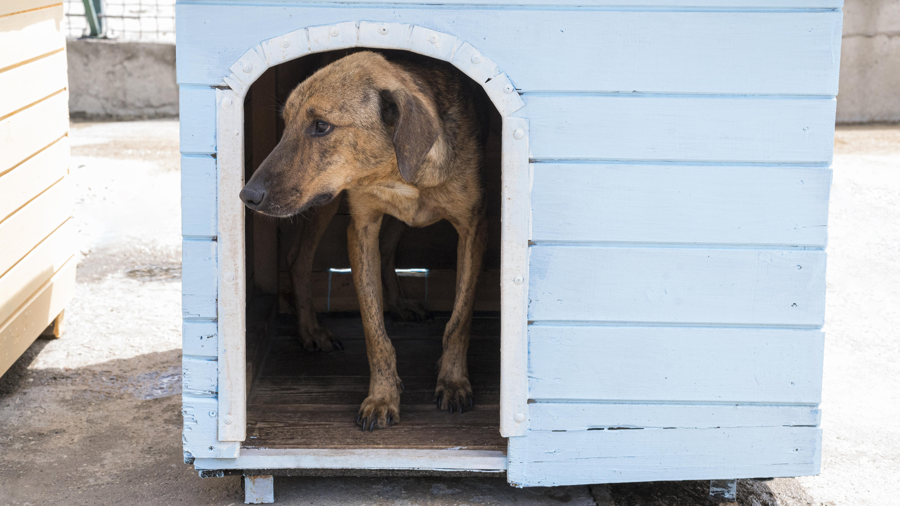

Adoção com Amor
Conecta animais resgatados a tutores responsáveis, com acompanhamento pós-adoção para garantir lares felizes e duradouros.

Lar Temporário do Bem
Rede de voluntários que acolhem animais em recuperação, reduzindo a superlotação do abrigo e acelerando a socialização dos pets.
EducaPet - Conscientização e Educação
Leva palestras e atividades sobre cuidado e respeito aos animais em escolas e comunidades, promovendo uma cultura de empatia desde cedo.